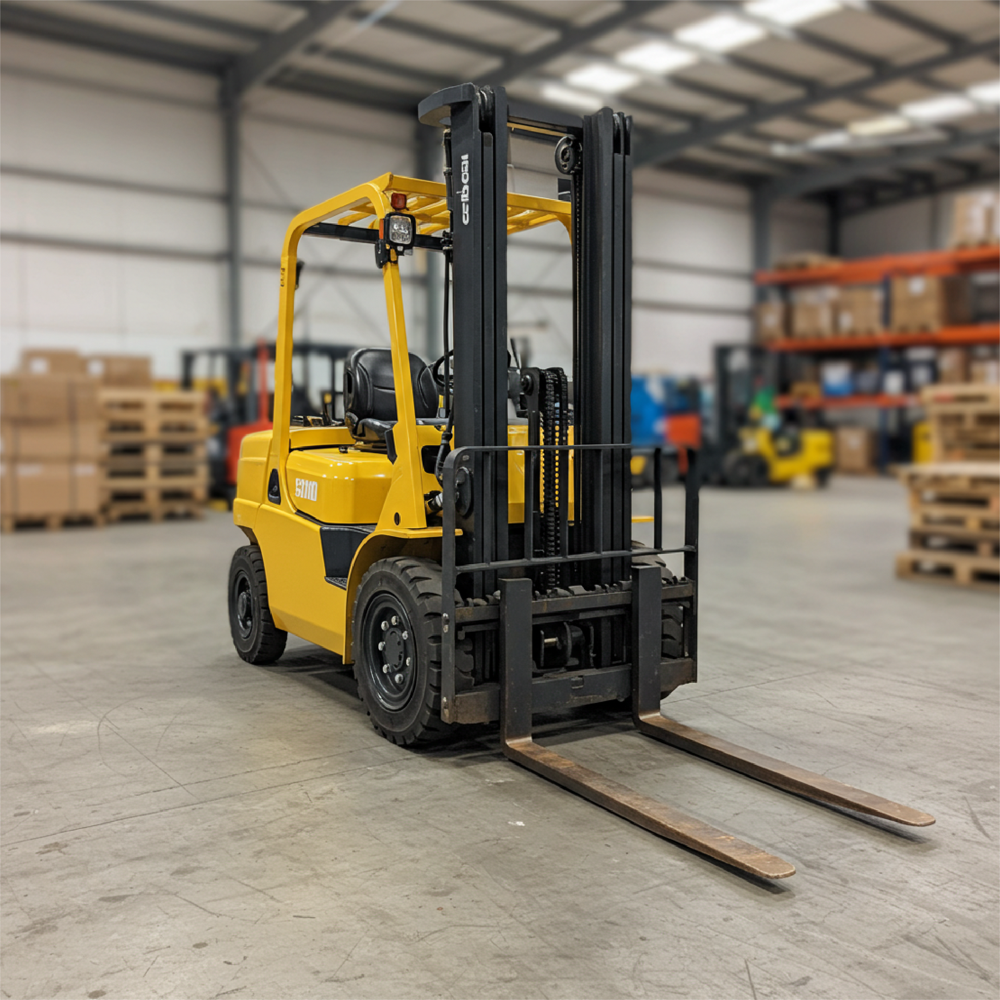

Curso de Grúa Horquilla (Monta Carga)
Potencia tus habilidades y obtén la certificación necesaria con nuestro curso 100% online de Grúa Horquilla (Monta Carga). Aprende a tu propio ritmo y desde cualquier lugar.
Duración del Curso: 16 horas
Valor del Curso: USD $65 (Aproximado)
¡Aprende con los mejores y obtén tu certificación!
¿Qué aprenderás en este curso?
- Protocolos de seguridad extremo minero
- Subsistemas del equipo de grúa horquilla
- Usos y aplicaciones del equipo en diversos entornos
- Obtén la certificación válida para presentar en la municipalidad y solicitar tu licencia de conducir Clase D
Este curso está diseñado para proporcionarte los conocimientos teóricos y prácticos esenciales para operar una grúa horquilla de manera segura y eficiente, cumpliendo con los estándares de la industria minera y preparándote para obtener tu licencia Clase D.
Inscríbete Ahora